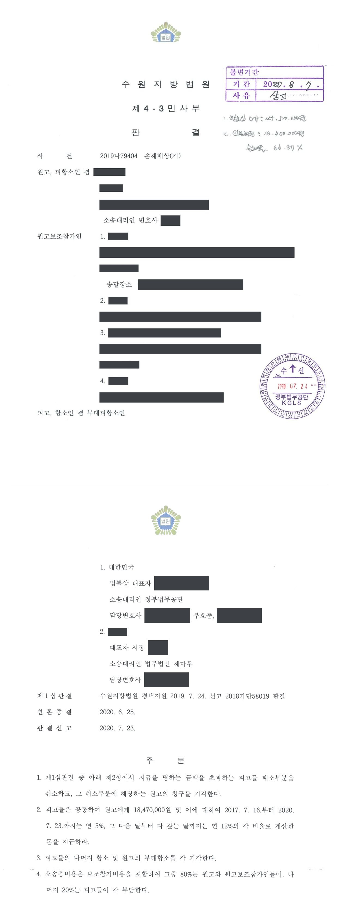

주한미군 담장 설치로 인한 침수 피해 국가배상 청구소송 (항소심)
수원지방법원 평택지원 2018가단58019 · 수원지방법원 2019나79404 · 담당변호사 부효준
판결문


사건의 요지
군사기지 경계 담장 설치 후 인근 이삿짐 보관시설이 침수되었다며 국가 등을 상대로 제기된 손해배상 청구에서, 담장 설치와 침수의 인과관계 및 손해액의 산정이 다투어진 사건입니다. 항소심은 제1심이 인정한 배상액을 절반 이하로 감액했습니다.
사건의 주요 내용
원고는 주한미군 기지 경계와 인접한 토지 위에 컨테이너를 설치하여 이삿짐 보관업을 하던 사람입니다. 주한미군이 2016년 말부터 기존 철조망 자리에 콘크리트 담장을 새로 설치하자 인근 주민들은 폭우 때 침수 가능성을 들어 민원을 제기하였고, 주한미군과 지방자치단체 등은 2017년 3월부터 회의와 현장조사를 거쳐 우수맨홀 확대와 우·오수관 연결 등 배수 개선이 필요하다는 데 뜻을 모았으나 시행 주체를 정하지 못하고 있었습니다. 그러던 중 2017년 7월 16일 새벽 두세 시간 사이에 96.5mm의 폭우가 쏟아져 배수로가 넘치면서 원고의 컨테이너가 침수되었습니다.
원고는 담장을 설치·관리하는 주한미군에 대하여 주한미군민사법 제2조에 따라 배상책임을 지는 국가와, 배수로를 설치·관리하는 지방자치단체를 상대로 차량 수리비, 고객들의 이삿짐 피해, 위자료 등 합계 1억 3,551만 원의 손해배상을 구하였습니다. 부효준 변호사는 피고 대한민국을 대리하였습니다. 제1심은 2019년 7월 피고들의 책임을 인정하되 70%로 제한하여 3,857만 원의 지급을 명하였고, 피고들이 항소하고 원고가 부대항소한 항소심은 2020년 7월 인용 금액을 1,847만 원으로 줄였습니다.
쟁점
- 주한미군이 설치한 콘크리트 담장과 지방자치단체가 관리하는 배수로에 국가배상법 제5조 제1항의 설치·관리상 하자가 있는지, 담장 설치와 침수 사이에 인과관계가 있는지
- 이삿짐을 맡긴 고객들에게 아직 배상하지 않은 예상 배상액을 원고의 현실적·확정적 손해로 볼 수 있는지
- 단시간의 집중호우와 원고의 방수조치 미비를 이유로 책임을 어느 비율로 제한할 것인지, 재산적 손해 외에 위자료가 인정되는지
원고의 주장
- 콘크리트 담장이 설치된 뒤 처음으로 침수사고가 발생하였고, 주한미군과 지방자치단체가 사고 전에 이미 침수 가능성을 예측하고 배수로의 문제를 인식하여 개선을 논의하였으므로, 담장의 설치·관리 하자에 대하여는 국가가, 배수로의 설치·관리 하자에 대하여는 지방자치단체가 각각 배상책임을 진다고 주장하였습니다.
- 손해로는 화물차·사다리차 수리비 510만 원, 고객들에게 지급한 합의금 1,700만 원, 아직 합의하지 못한 고객들(원고 보조참가인 등)에 대한 손해배상 예정액 9,341만 원과 배상 지연 등으로 입은 정신적 고통에 대한 위자료 2,000만 원을 주장하였습니다.
부효준 변호사의 주장
- 침수는 이삿짐센터 근처에 방치된 쓰레기가 맨홀을 막아 발생한 것이어서 기본적으로 원고에게 책임이 있고, 그렇지 않더라도 지방자치단체가 관리하는 배수로의 문제로 발생한 것이지 담장 설치 때문이 아니라고 주장하였습니다.
- 항소심에서는 담장이 설치된 뒤 사고 전인 2017년 7월 초순에도 상당한 양의 비가 내렸으나 침수가 없었으므로 담장 설치와 침수 사이에 인과관계가 없다는 점을 추가로 주장하였습니다.
- 원고가 농지 위에 허가 없이 컨테이너를 설치하여 이삿짐을 보관하다가 입은 피해는 예견할 수 없는 특별손해이고, 원고가 보조참가인들에게 배상하여야 할지도 확정되지 않은 금액은 현실적·확정적 손해가 아니라고 다투었습니다.
법원의 판단
법원은 국가배상법 제5조 제1항의 영조물 설치·관리상 하자는 영조물이 용도에 따라 통상 갖추어야 할 안전성을 갖추지 못한 상태를 말하고, 설치·관리자가 위험성에 비례하여 사회통념상 요구되는 방호조치의무를 다하였는지를 기준으로 판단한다는 법리를 전제로, 콘크리트 담장을 설치하면 지표면을 흘러 자연 배수되던 빗물의 처리에 지장이 생길 수 있음에도 추가 배수장치를 고려하지 않은 주한미군 측과 폭우에 대비한 배수로를 설치하지 않은 지방자치단체의 공동책임을 인정하였습니다. 쓰레기가 맨홀을 막았다는 주장은 오히려 침수로 물건들이 떠내려온 것으로 보인다는 이유로, 특별손해 주장은 피고들이 사고 전 현장조사로 이삿짐센터 등의 존재를 알고 있었다는 이유로 각각 배척되었습니다.
항소심은 기상 관측기관에 대한 사실조회 결과를 토대로, 사고 당일에는 시간당 최대 58mm에 이르는 집중호우가 있었던 반면 그 직전 2주 동안에는 그에 견줄 만한 강우가 없었고 담장 설치 전에는 침수가 없었다는 점을 들어 담장 설치와 침수 사이의 인과관계를 인정하였습니다. 손해의 범위에서는 차량 수리비 510만 원과 고객 4명에게 실제 지급한 합의금 1,700만 원은 손해로 인정하였으나, 아직 합의하지 않은 보조참가인들에 대한 배상 예정액은 현실적·확정적 손해로 볼 수 없다고 하여 제1심이 인정한 5,000만 원 부분을 받아들이지 않았습니다.
책임 비율은 단시간의 폭우라는 자연적 요인과 원고가 야외 컨테이너에 방수조치를 하지 않은 점을 고려하여 제1심과 같이 70%로 제한하였고, 제1심이 받아들이지 않은 위자료는 영업 기반이 한꺼번에 침수된 충격을 피고들이 알 수 있었다고 보아 300만 원을 인정하였습니다. 그 결과 피고들이 공동하여 지급할 금액은 1,847만 원[(510만 원+1,700만 원)×70%+300만 원]으로 정해졌고, 피고들의 나머지 항소와 원고의 부대항소는 받아들여지지 않았습니다.
국가배상법 제5조 제1항에 규정된 '영조물 설치·관리상의 하자'는 공공의 목적에 공여된 영조물이 그 용도에 따라 통상 갖추어야 할 안전성을 갖추지 못한 상태에 있음을 말한다. 그리고 위와 같은 안전성의 구비 여부는 영조물의 설치자 또는 관리자가 그 영조물의 위험성에 비례하여 사회통념상 일반적으로 요구되는 정도의 방호조치의무를 다하였는지를 기준으로 판단하여야 하고, 아울러 그 설치자 또는 관리자의 재정적·인적·물적 제약 등도 고려하여야 한다.
수원지방법원 평택지원 2018가단58019 판결 이유 '2. 나. 판단 1)' 부분(항소심이 그대로 인용)
불법행위나 채무불이행을 이유로 배상하여야 할 손해는 현실로 입은 확실한 손해에 한하므로, 불법행위나 채무불이행 등으로 인하여 피해자 또는 채권자가 제3자에 대하여 채무를 부담하게 된 경우 채권자가 채무자에게 그 채무액 상당의 손해배상을 구하기 위해서는 채무의 부담이 현실적·확정적이어서 실제로 변제하여야 할 성질의 것이어야 하고, 현실적으로 손해가 발생하였는지 여부는 사회통념에 비추어 객관적이고 합리적으로 판단하여야 한다(대법원 2014. 6. 12. 선고 2013다65604 판결).
수원지방법원 2019나79404 판결 이유 '3. 나. (2) (다) 원고 보조참가인들에 대한 손해배상금'
일반적으로 타인의 불법행위 등에 의하여 재산권이 침해된 경우에는 그 재산적 손해의 배상에 의하여 정신적 고통도 회복된다고 보아야 할 것이므로 재산적 손해의 배상에 의하여 회복할 수 없는 정신적 손해가 발생하였다면, 이는 특별한 사정으로 인한 손해로서 가해자가 그러한 사정을 알았거나 알 수 있었을 경우에 한하여 그 손해에 대한 위자료를 청구할 수 있다(대법원 2004. 3. 18. 선고 2001다82507 전원합의체 판결).
수원지방법원 2019나79404 판결 이유 '3. 나. (3) 위자료'
※ 판결 이유 가운데 이 사건의 판단 기준이 된 부분을 그대로 옮긴 것으로, 당사자 이름 등은 가렸습니다.
이 사건이 보여 주는 것
주한미군이 점유·관리하는 시설의 설치·관리 하자로 제3자가 손해를 입으면 주한미군민사법 제2조에 따라 대한민국이 국가배상법에 의한 배상책임을 지며, 그 책임의 유무는 통상의 영조물 책임과 같이 방호조치의무를 다하였는지로 판단합니다. 이 판결은 집중호우라는 자연적 요인이 겹친 경우에도 하자가 인정될 수 있지만 그 사정이 책임 제한 사유가 된다는 점을 보여 줍니다.
손해의 범위에서는 피해자가 제3자에게 배상하여야 할 금액을 손해로 청구하려면 실제로 지급하였거나 지급의무가 현실적·확정적으로 발생하였어야 하며, 예상 배상액을 미리 청구할 수는 없다는 점이 결론을 좌우하였습니다. 침수 피해를 입은 사업자라면 고객과의 합의와 지급 내역을 정리해 두는 것이 손해 증명에 중요합니다.
비슷한 처분을 받으셨다면
행정처분은 처분이 있음을 안 날부터 90일 이내에 행정심판이나 취소소송으로 다투어야 하고, 기간이 지나면 돌이킬 수 없는 처분은 집행정지를 서둘러야 합니다. 처분서를 받은 날짜부터 확인해 드립니다.